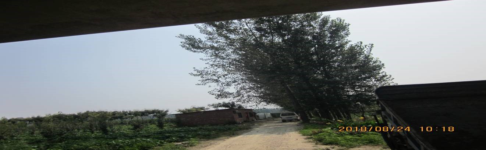
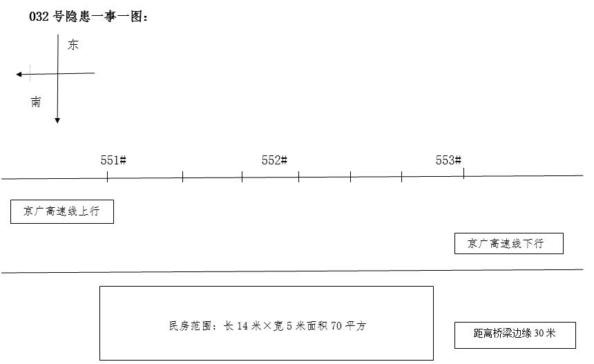

安保区第32号隐患 “一事一档一图”处置记录表
档案编号：漯检-32
建档时间：2018.8.24
| 地点 | 漯驻区间522#墩K898+446 | ||
| 管辖车间、工区 | 漯河西检测工区 | ||
| 责任单位（施工单位、业主、归属地管理单位） | 业主单位： | ||
| 施工单位：个体： | |||
| 归属地：驻马店市西平县谭店乡刑店村 | |||
| 责任人及联系方式 | 业主单位: | ||
| 施工单位: | |||
| 个体：未找到责任人 | |||
| 问题描述 | 问题描述 | 522#墩K862+446菜地住户彩钢瓦顶 |
隐患照片 |
| 铁路安全保护区范围 | 该处桥梁外缘30米 | ||
| 风险评估 | 安保范围内存在彩钢瓦刮落隐患 | ||
| 处置过程 | 2018年8月24日漯河西检测工区进行线下巡查，当巡查自漯驻区间522#墩K898+446处发现京广高铁522#墩K898+446处有菜地住户平房彩钢瓦房顶，该处属铁路安全保护区下行东侧，距桥梁外缘30米，存有彩钢瓦被大风刮到线路上的安全隐患。属个人所有，未找到责任人，将告知书放其门缝，让其加固。班组无执法权，只有向漯河西车站公安所报警，接警人0号台，报警电话：77308。 | ||
| 处置结案 | 附照片 | ||
| 后期情况 |  | ||
后附：处置过程记录资料
隐患一事一图
